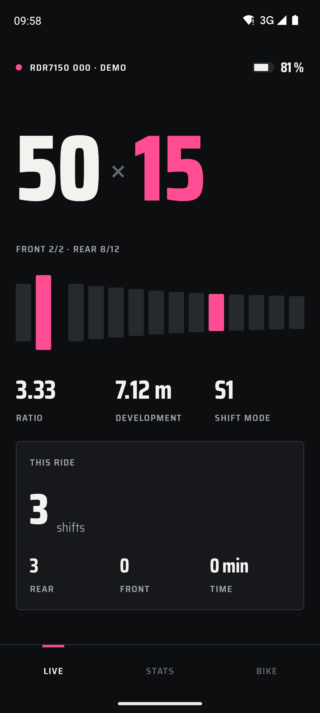

Dein Di2, auf einen Blick.
Gang, Akku und jeder Schaltvorgang deiner 12-fach Shimano Di2. Ohne Konto.
Android 8 oder neuer. Kostenlos und quelloffen unter GPL-3.0.


Jeder Gangwechsel, gezählt.
Ein Multi-Shift über drei Ritzel zählt als drei. Schaltblick misst, wie lange du in jedem Kettenblatt und Ritzel fährst, und zeichnet daraus eine Heatmap. Gänge mit Schräglauf sind orange umrandet.
Eine Fahrt endet von selbst, zehn Minuten nachdem das Schaltwerk eingeschlafen ist.
Deine Fahrten bleiben auf dem Handy.
Keine Anmeldung
Keine SHIMANO ID, überhaupt kein Konto.
Eine Verbindung
Bluetooth zum Schaltwerk, dazu eine abschaltbare Update-Prüfung bei GitHub.
Nur lesen
Schaltblick schreibt weder Einstellungen noch Firmware.

Läuft mit 12-fach Di2.
| Gruppe | Schaltwerk | Status |
|---|---|---|
| 105 Di2 | RD-R7150 | getestet |
| Ultegra Di2 | RD-R8150 | gleiches Protokoll |
| Dura-Ace Di2 | RD-R9250 | gleiches Protokoll |
| GRX Di2 | RD-RX825 | gleiches Protokoll |
Fragen
Brauche ich E-TUBE PROJECT oder eine SHIMANO ID?
Nein. Schaltblick liest den Bluetooth-Dienst, den auch Radcomputer nutzen.
Kann es meine Schalteinstellungen ändern?
Noch nicht. Version 0.1 liest nur.
Geht es mit 11-fach Di2?
Nicht getestet. 11-fach braucht Shimanos Funkeinheit EW-WU111.
Woher kommt das Protokoll?
Von einem echten RD-R7150, Byte für Byte beschrieben in PROTOCOL.md.